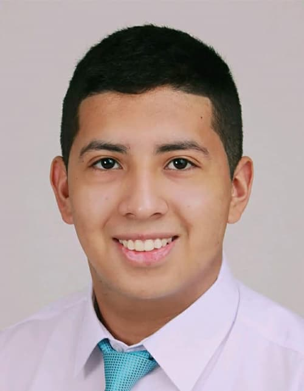

Paulo Aguilar Veintemilla
About Me

My name is Paulo Aguilar Veintemilla. I was born in Perú, Trujillo where I currently live. I am a web development student from Perú, I like to learn new things, coding and go to church . I am a returned missionary from the Perú Cusco Mission.
My Favorite Place

"The Trujillo Temple, dedicated in 2015, is a very meaningful place for me. My father was there the day of its dedication and he could meet Elder Dieter F. Uchdort. From that moment on, we no longer had to go to Lima to enter the temple. That is where I learned to do vicarious work, and where I received my endowment.